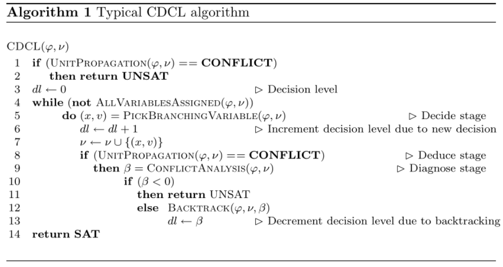

The Implementation
In the code, I frequently use the dataclass from standard library. Basically it is just a shorthand for defining a small class storing only few properties. It saves the code for us to define __init__ function, and better default string representation:
from dataclasses import dataclass
@dataclass
class Animal:
name: str
kind: str
age: int
print(Animal('Pikachu', 'Cat', 3))
# output: Animal(name='Pikachu', kind='Cat', age=3)
It becomes clear on what a class stores.
Structures
Next, we implement the class for
- Literal =
var + negation? - Clause =
List[Literal] - Formula =
List[Clause]
Instead of representing them with primitive types, put them into individual classes are easier to read in my opinion.
The variables are represented as integer. First import all the standard libraries we used:
import sys
import random
from pprint import pprint
from dataclasses import dataclass
from typing import List, Set, Tuple, Optional, Iterator
Literal
# frozen to be hashable
@dataclass(frozen=True)
class Literal:
variable: int
negation: bool
def __repr__(self):
if self.negation:
return '¬' + str(self.variable)
else:
return str(self.variable)
def neg(self) -> 'Literal':
"""
Return the negation of this literal.
"""
return Literal(self.variable, not self.negation)
Clause
The clause is just a list of literals.
@dataclass
class Clause:
literals: List[Literal]
def __repr__(self):
return '∨'.join(map(str, self.literals))
def __iter__(self) -> Iterator[Literal]:
return iter(self.literals)
def __len__(self):
return len(self.literals)
Formula
The formula is just a list of clauses. We remove duplicate literals like \((1∨ 1 ∨ 2)\) and cache the variables in the constructor.
@dataclass
class Formula:
clauses: List[Clause]
__variables: Set[int]
def __init__(self, clauses: List[Clause]):
"""
Remove duplicate literals in clauses.
"""
self.clauses = []
self.__variables = set()
for clause in clauses:
self.clauses.append(Clause(list(set(clause))))
for lit in clause:
var = lit.variable
self.__variables.add(var)
def variables(self) -> Set[int]:
"""
Return the set of variables contained in this formula.
"""
return self.__variables
def __repr__(self):
return ' ∧ '.join(f'({clause})' for clause in self.clauses)
def __iter__(self) -> Iterator[Clause]:
return iter(self.clauses)
def __len__(self):
return len(self.clauses)
Assignment
Assignment class represent one assignment to a variable. It contains
- The value (
TrueorFalse) of what the variable assigned to. - The optional antecedent of this assignment. The antecedent is the clause that forced this assignment due to unit constraint. If this assignment is due to decision (guessing), then antecedent is
None. dl- The decision level of this assignment.
@dataclass
class Assignment:
value: bool
antecedent: Optional[Clause]
dl: int # decision level
An instance of Assignment contains the information in the red circle.
value= 0 (False)antecedent= \(\omega_2\)dl= 5
Assignments
Assignments is the partial assignments of variables, maps an int to Assignment. An efficient representation of assignments should be stored in a list trail, which improve the backtrack efficiency.
I also added a utility method value here.
class Assignments(dict):
"""
The assignments, also stores the current decision level.
"""
def __init__(self):
super().__init__()
# the decision level
self.dl = 0
def value(self, literal: Literal) -> bool:
"""
Return the value of the literal with respect the current assignments.
"""
if literal.negation:
return not self[literal.variable].value
else:
return self[literal.variable].value
def assign(self, variable: int, value: bool, antecedent: Optional[Clause]):
self[variable] = Assignment(value, antecedent, self.dl)
def unassign(self, variable: int):
self.pop(variable)
def satisfy(self, formula: Formula) -> bool:
"""
Check whether the assignments actually satisfies the formula.
"""
for clause in formula:
if True not in [self.value(lit) for lit in clause]:
return False
return True
Main Procedures
Having defined all the needed classes, now are the hard parts. We will implement the full CDCL solver here.
The CDCL algorithm generally follows the structure:
Note that \(\nu\) above is the partial assignments, which represented by assignments in our code.
Translate it into Python code:
cdcl_solve
We return the learnt_clause from conflict_analysis, and add the learnt_clause to the formula afterward, and return the reason as well as the clause that are the cause of the reason from unit_propagation.
def cdcl_solve(formula: Formula) -> Optional[Assignments]:
"""
Solve the CNF formula.
If SAT, return the assignments.
If UNSAT, return None.
"""
assignments = Assignments()
# First, do unit propagation to assign the initial unit clauses
reason, clause = unit_propagation(formula, assignments)
if reason == 'conflict':
return None
while not all_variables_assigned(formula, assignments):
var, val = pick_branching_variable(formula, assignments)
assignments.dl += 1
assignments.assign(var, val, antecedent=None)
while True:
reason, clause = unit_propagation(formula, assignments)
if reason != 'conflict':
# no conflict after unit propagation, we back
# to the decision (guessing) step
break
b, learnt_clause = conflict_analysis(clause, assignments)
if b < 0:
return None
add_learnt_clause(formula, learnt_clause)
backtrack(assignments, b)
assignments.dl = b
# The learnt clause must be a unit clause, so the
# next step must again be unit progagation
return assignments
Next, we implement all the functions mentioned in cdcl_solve. Starts from the easy to hard.
add_learnt_clause
"Learning" a clause is just as simple as adding it to the formula.
def add_learnt_clause(formula: Formula, clause: Clause):
formula.clauses.append(clause)
all_variables_assigned
As simple as it is:
def all_variables_assigned(formula: Formula, assignments: Assignments) -> bool:
return len(formula.variables()) == len(assignments)
pick_branching_variable
Choose the next decision variable and its value based on our branching heuristic - no heuristic.
We randomly choose a variable in unassigned variables and randomly choose a value.
def pick_branching_variable(formula: Formula, assignments: Assignments) -> Tuple[int, bool]:
unassigned_vars = [var for var in formula.variables() if var not in assignments]
var = random.choice(unassigned_vars)
val = random.choice([True, False])
return (var, val)
backtrack
This function backtracks to decision level \(b\), removing all the assignment of variables with decision level \(\gt b\).
def backtrack(assignments: Assignments, b: int):
to_remove = []
for var, assignment in assignments.items():
if assignment.dl > b:
to_remove.append(var)
for var in to_remove:
assignments.pop(var)
unit_propagation
Next is unit propagation. We detect conflict or unit clause in this function, and return the reason and the corresponding clause.
def clause_status(clause: Clause, assignments: Assignments) -> str:
"""
Return the status of the clause with respect to the assignments.
There are 4 possible status of a clause:
1. Unit - All but one literal are assigned False
2. Unsatisfied - All literals are assigned False
3. Satisfied - All literals are assigned True
4. Unresolved - Neither unit, satisfied nor unsatisfied
"""
values = []
for literal in clause:
if literal.variable not in assignments:
values.append(None)
else:
values.append(assignments.value(literal))
if True in values:
return 'satisfied'
elif values.count(False) == len(values):
return 'unsatisfied'
elif values.count(False) == len(values) - 1:
return 'unit'
else:
return 'unresolved'
def unit_propagation(formula: Formula, assignments: Assignments) -> Tuple[str, Optional[Clause]]:
# finish is set to True if no unit and conflict clause found in one iteration
finish = False
while not finish:
finish = True
for clause in formula:
status = clause_status(clause, assignments)
if status == 'unresolved' or status == 'satisfied':
continue
elif status == 'unit':
# select the literal to propagate
literal = next(literal for literal in clause if literal.variable not in assignments)
var = literal.variable
val = not literal.negation
# assign the variable according to unit rule
assignments.assign(var, val, antecedent=clause)
finish = False
else:
# conflict
return ('conflict', clause)
return ('unresolved', None)
conflict_analysis
conflict_analysis finds the the backtrack level and the newly learnt clause, which comes from the first UIP cut.
It follows the formula (see the section above: Exploiting Structure with UIPs):
\[
w_L^{d,i} = \begin{cases}
\alpha(\kappa),&i=0 \\
w_L^{d,i-1} \odot \alpha(l).&i\ne 0 ∧ \xi(w_L^{d,i-1},l,d) = 1 \\
w_L^{d,i-1},& i\ne 0 ∧ \sigma(w_L^{d,i-1},d) = 1
\end{cases}
\]
We first define the resolution operation, then the main conflict_analysis function:
def resolve(a: Clause, b: Clause, x: int) -> Clause:
"""
The resolution operation
"""
result = set(a.literals + b.literals) - {Literal(x, True), Literal(x, False)}
result = list(result)
return Clause(result)
def conflict_analysis(clause: Clause, assignments: Assignments) -> Tuple[int, Clause]:
if assignments.dl == 0:
return (-1, None)
# literals with current decision level
literals = [literal for literal in clause if assignments[literal.variable].dl == assignments.dl]
while len(literals) != 1:
# implied literals
literals = filter(lambda lit: assignments[lit.variable].antecedent != None, literals)
# select any literal that meets the criterion
literal = next(literals)
antecedent = assignments[literal.variable].antecedent
clause = resolve(clause, antecedent, literal.variable)
# literals with current decision level
literals = [literal for literal in clause if assignments[literal.variable].dl == assignments.dl]
# out of the loop, `clause` is now the new learnt clause
# compute the backtrack level b (second largest decision level)
decision_levels = sorted(set(assignments[literal.variable].dl for literal in clause))
if len(decision_levels) <= 1:
return 0, clause
else:
return decision_levels[-2], clause
DIMACS CNF
The DIMACS CNF format is a textual representation of a formula in conjunctive normal form.
For example, the formula \((1∨2∨¬ 3) ∧ (¬ 2 ∧ 3)\) can be encoded as:
p cnf 3 2
1 2 -3 0
-2 3 0
parse_dimacs_cnf
Here is the code to parse DIMACS CNF file to a Formula, you can take it as given:
def parse_dimacs_cnf(content: str) -> Formula:
"""
parse the DIMACS cnf file format into corresponding Formula.
"""
clauses = [Clause([])]
for line in content.splitlines():
tokens = line.split()
if len(tokens) != 0 and tokens[0] not in ("p", "c"):
for tok in tokens:
lit = int(tok)
if lit == 0:
clauses.append(Clause([]))
else:
var = abs(lit)
neg = lit < 0
clauses[-1].literals.append(Literal(var, neg))
if len(clauses[-1]) == 0:
clauses.pop()
return Formula(clauses)
and we have just successfully implemented a CDCL solver in less than 300 lines of code, try it out:
if __name__ == '__main__':
# you might comment it to get inconsistent execution time
random.seed(5201314)
if len(sys.argv) != 2:
print('Provide one DIMACS cnf filename as argument.')
sys.exit(1)
dimacs_cnf = open(sys.argv[1]).read()
formula = parse_dimacs_cnf(dimacs_cnf)
result = cdcl_solve(formula)
if result:
assert result.satisfy(formula)
print('Formula is SAT with assignments:')
assignments = {var: assignment.value for var, assignment in result.items()}
pprint(assignments)
else:
print('Formula is UNSAT.')